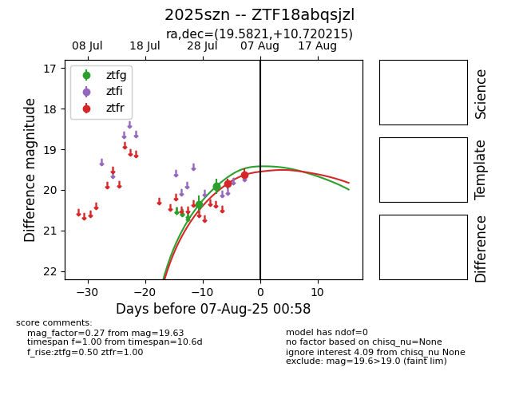

Target 2025szn at 2025-08-21 11:20, see:
FINK: fink-portal.org/ZTF18abqsjzl
Lasair: lasair-ztf.lsst.ac.uk/objects/ZTF18abqsjzl
ALeRCE: alerce.online/object/ZTF18abqsjzl
TNS: wis-tns.org/object/2025szn
YSE: ziggy.ucolick.org/yse/transient_detail/2025szn
alt names
ZTF18abqsjzl (ztf,alerce)
2025szn (tns,yse)
coordinates:
equatorial (ra, dec) = (19.5821,+10.72017)
galactic (l, b) = (133.6016,-51.59364)
photometry
last ztfg=19.89, ztfi=19.76, ztfr=19.77
6 ztfg, 2 ztfi, 3 ztfr detections
